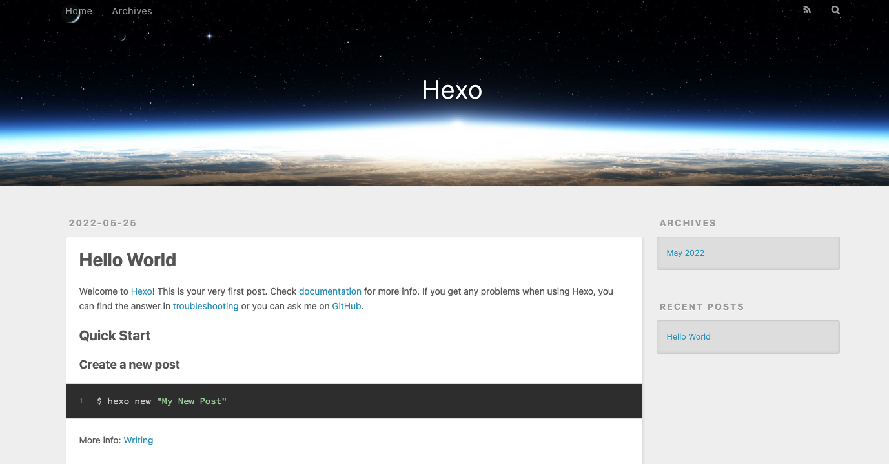
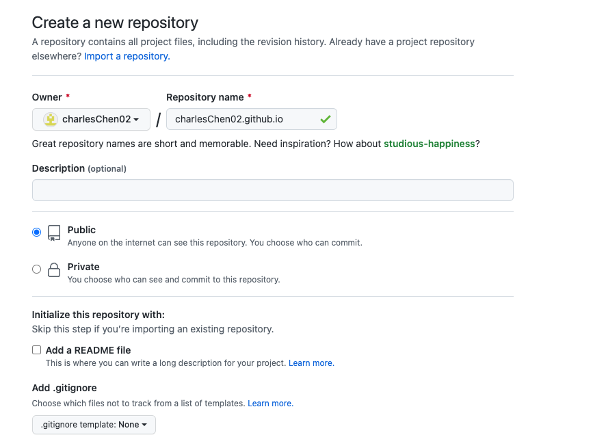

Abstract: 从零开始搭建一个个人博客的快速教程!
博客需要nodejs的支持, 进行下载
Visit: https://nodejs.org/en/
chaos@charles-mbp ~ % sudo su
sh-3.2# node -v
v16.15.0
sh-3.2# npm -v
8.5.5
sh-3.2#
npm安装hexo模块sh-3.2# npm install -g hexo-cli
sh-3.2# pwd
/Users/chaos
sh-3.2# mkdir Blogs
sh-3.2# cd Blogs
sh-3.2# pwd
/Users/chaos/Blogs
sh-3.2#
hexo博客 (会开始下载对应的文件)sh-3.2# sudo hexo init
INFO Cloning hexo-starter https://github.com/hexojs/hexo-starter.git
INFO Install dependencies
INFO Start blogging with Hexo!
sh-3.2# ls -l
total 344
drwxr-xr-x 3 root staff 96 25 May 13:54 .github
-rw-r--r-- 1 root staff 82 25 May 13:54 .gitignore
-rw-r--r-- 1 root staff 0 25 May 13:54 _config.landscape.yml
-rw-r--r-- 1 root staff 2441 25 May 13:54 _config.yml
drwxr-xr-x 221 chaos staff 7072 25 May 13:54 node_modules
-rw-r--r-- 1 root staff 159762 25 May 13:54 package-lock.json
-rw-r--r-- 1 root staff 615 25 May 13:54 package.json
drwxr-xr-x 5 root staff 160 25 May 13:54 scaffolds
drwxr-xr-x 3 root staff 96 25 May 13:54 source
drwxr-xr-x 3 root staff 96 25 May 13:54 themes
sh-3.2# hexo s
INFO Validating config
INFO Start processing
INFO Hexo is running at http://localhost:4000/ . Press Ctrl+C to stop.
此时可以在本地 http://localhost:4000/ 看到hexo博客. (一般本地启动预览用)

sh-3.2# hexo n "First Blog"
INFO Validating config
INFO Created: /Users/chaos/Blogs/source/_posts/First-Blog.md
sh-3.2#
hexo 清理缓存
sh-3.2# hexo clean
INFO Validating config
INFO Deleted database.
hexo 生成博客
sh-3.2# hexo g
INFO Validating config
INFO Start processing
INFO Files loaded in 65 ms
INFO Generated: archives/index.html
INFO Generated: index.html
INFO Generated: archives/2022/05/index.html
INFO Generated: js/script.js
INFO Generated: fancybox/jquery.fancybox.min.css
INFO Generated: css/fonts/fontawesome-webfont.woff
INFO Generated: css/style.css
INFO Generated: js/jquery-3.4.1.min.js
INFO Generated: fancybox/jquery.fancybox.min.js
INFO Generated: css/fonts/fontawesome-webfont.woff2
INFO Generated: css/fonts/FontAwesome.otf
INFO Generated: archives/2022/index.html
INFO Generated: css/fonts/fontawesome-webfont.ttf
INFO Generated: css/fonts/fontawesome-webfont.eot
INFO Generated: css/images/banner.jpg
INFO Generated: 2022/05/25/First-Blog/index.html
INFO Generated: css/fonts/fontawesome-webfont.svg
INFO Generated: 2022/05/25/hello-world/index.html
INFO 18 files generated in 135 ms

hexo git部署的插件:sh-3.2# npm install --save hexo-deployer-git
added 2 packages, and audited 241 packages in 1s
18 packages are looking for funding
run `npm fund` for details
found 0 vulnerabilities
sh-3.2#
_config.yml, 在末尾deploy处修改为github对应路径# Deployment
## Docs: https://hexo.io/docs/one-command-deployment
deploy:
type: git
repo: https://github.com/charlesChen02/charlesChen02.github.io.git
branch: master
sh-3.2# hexo d
登陆账号等
INFO Deploy done: git
表示部署完成
更换为 eg: https://github.com/litten/hexo-theme-yilia